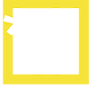
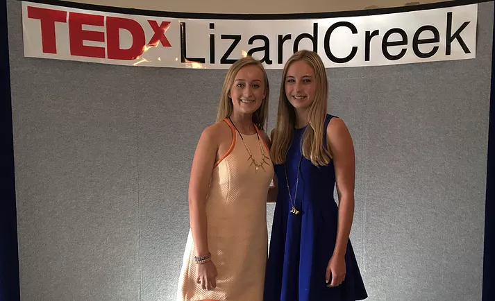
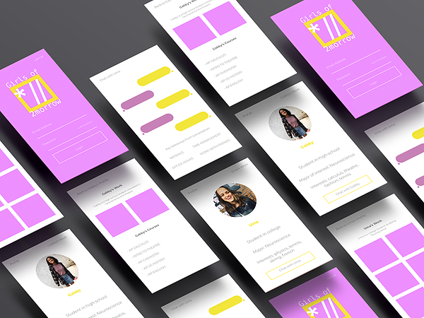

Girls of 2morrowWe’re supporting high school girls facing STEM stereotypes

My co-founder, Simone Johnston, gave a TEDx talk on our story
Project Summary
I co-founded Girls of 2morrow with a girl I met at a high school summer program at MIT. We both shared a common interest in science, technology, engineering, and math (STEM) but had other interests in fashion and modeling. We went through high school feeling like we didn't belong in the STEM courses we were taking, and we were so thrilled to have found each other.
Challenge
High school girls, who are interested in STEM, struggle to find support from their peers.
Solution
A virtual support system for high school girls interested in STEM to connect with one another.
Skills
Public Speaking (Spoke at TEDxLizardCreek in October 2015)
Marketing
Illustrator
Photoshop
Sketch
1. Analyze the problem
We created a twitter account in July 2015 and reached out to high school girls who are social media influencers. A lot of them felt a lack of support for their interests in high school. Next, we reached out to women featured in the news for their interests in STEM and other diverse interests. For example, we set up a conference call with Amelia Gandara, a former model and ballerina, with a degree in chemical engineering.
2. TEDxtalk
We wanted to share our story as soon as possible and brainstormed ways to do so. We reached out to several talks and was invited to speak at a TEDx event in October 2015.
3. Prototype

Together we envisioned a support system for these high school girls interested in STEM. We used Sketch to plan out exactly how we wanted the platform to look and work.
Next Steps
We are currently testing the platform with users and getting feedback. From the feedback, we plan to start a a LinkedIn group page and invite girls interested in STEM. We want to feature older women from college and up who have battled stereotypes associated with people in STEM fields.